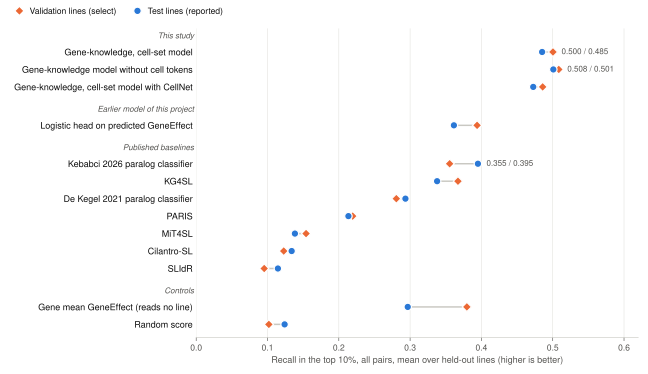
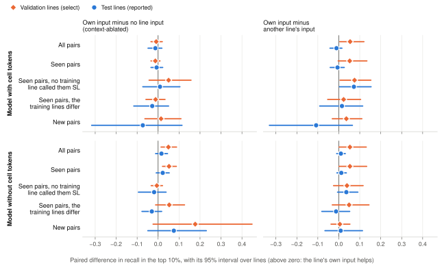

Stage two · SL benchmark
The Gene-Knowledge, Cell-Set Model on the SL Benchmark
Question
Can a deep model beat the baselines on SL ranking in held-out cell lines? This is the experiment of the plan (§4): one architecture, one config, seed 0. Stage one is pretraining on GeneEffect and its accuracy is no aim. Stage two reads the model's gene-in-line embeddings, not its predicted GeneEffect. A second question, added on 2026-11-20: where does the result hold (seen and new pairs), and does the score read the line?
Model
Benchmark
- Labels:
data/sl_studies/benchmark_v2on the H20 (card). The SL split (configs/benchmarks/cell_line_sl_split.json) places 77 lines by hand: 44 training, 17 validation and 16 test. Rows: 1,420,001 training, 255,286 validation and 288,470 test. - A screen is the set of pairs that one study tested in one line with one method. The headline uses the genetic screens with both classes: recall in the top 10% of each screen, over the smaller of its SL pairs and its top-10% places, averaged over screens, then studies, then lines.
- Every held-out line is an unseen line: it enters a model only through its basal expression and cells. Negatives are tested and not called; they are not true negatives.
- Row sets. A pair is seen when the same study labelled it in a training line; else it is new. The seen pairs divide by what those training lines called them: no line called the pair SL, the lines differ, or every line called it SL. These sets read no label of the held-out line. A row set is ranked inside it in each screen, and a line counts when one of its screens has both classes in the set.
- The harness report also has two strata that the held-out label defines (the label agrees with, or differs from, the training lines). They are not shown here: a score that follows the training lines is below random in the second one by its construction.
Rows
- Gene-knowledge, cell-set model (Tx1-3B cell tokens): the model of the plan. A gene vector from three frozen sources (function text, ESM C 600M protein, STRING space) plus a free deviation; a line as a mean token (an MLP over its mean expression) and one token for each cell (a linear map of the cell's frozen Tx1-3B embedding); each gene weights the cells in its own way; a pair head on the gene-in-line embeddings of the two genes.
- Gene-knowledge model without cell tokens: the same model and training, every line on its mean token alone. The difference from the full model is what the cells add.
- Gene-knowledge, cell-set model with CellNet's cell embeddings: the same model with another frozen cell encoder (CellNet, arXiv:2610.21943) for the same cells.
- Context-ablated: the finished weights, scored again with the fit lines' mean expression and no cells in place of each line's input. The score then reads the two genes alone, so a pair has one score in every line. Another line's input: the same weights with the expression and cells of another benchmark line (the next line in a seeded order). No model is refitted for these rows.
- Stage one at a tenth of the learning rate: the model without cell tokens, with a slower pretraining. It is no harness row, because its SL scores are equal to those of the model without cell tokens (Table 7).
- Backbone head on the buffer-aware reader's terms: the project's earlier stage-two model, a logistic head on predicted GeneEffect terms (SL protocol §12).
- Published baselines: KG4SL, Cilantro-SL, PARIS, SLIdR, De Kegel 2021, Kebabci 2026 and MiT4SL, as in the baseline record. Rows that score only part of the held-out pairs give the other pairs one fill score.
- Controls and references: stage one's predicted GeneEffect, pan-essentiality (the gene mean GeneEffect of the two genes, which reads no line), measured GeneEffect, the labels (the ceiling) and a random score.
What ran
Each run is hpc/run.sh sl-embedding <config> on one GPU: stage one on the
GeneEffect of 928 lines without an SL label (366 with cells), with the early stop on the 47 SL training lines with
GeneEffect; then stage two on the 1,146,517 rows of the 44 SL training lines, first the pair head on the frozen
model, then the whole model with the GeneEffect loss at weight 1. Validation recall in the top 10% selects the epoch
and the phase. Outputs: outputs/sl/embedding/<run>/ and
outputs/sl/benchmark_baselines/benchmark_embedding_seed0_v3/. Copied reports:
harness (config,
recall, AUROC and AUPRC of every row and row set),
full model, without cell
tokens, CellNet,
slower stage one, each with its
_metrics.json; linear expression model.
The score tables, best.pt, lines.csv and lists.csv stay on the H20.
| Step | Port | Code | Finished (UTC) |
|---|---|---|---|
| Gene sources: function text, ESM C 600M, STRING space (17,787 genes) | — | — | 2026-11-19 20:28 |
Model without cell tokens (configs/sl/embedding_mean_token.yaml) | 30757 | 6325dfc | 2026-11-19 20:33 |
| CellNet embeddings of the cells of 454 lines | 30757 | — | 2026-11-19 20:44 |
CellNet variant (configs/sl/embedding_cellnet.yaml) | 30757 | db8a96e | 2026-11-19 20:48 |
Slower stage one (configs/sl/embedding_mean_token_slow_stage_one.yaml) | 30757 | bee1bcc | 2026-11-19 20:48 |
| Tx1-3B embeddings of the 22 SL lines that had none | 30838 | — | 2026-11-19 21:54 |
Full model (configs/sl/embedding.yaml) | 30838 | bee1bcc | 2026-11-19 23:05 |
Line-input controls of the full model and of the model without cell tokens (--line-input-controls) | 30838 | e4e7344 | 2026-11-20 06:07 |
Harness (hpc/run.sh sl-baselines configs/sl/benchmark_embedding.yaml) | 30838 | 39f1f26 | 2026-11-20 06:23 |
Results: all pairs
Recall in the top 10% is the share of a screen's SL pairs that a model ranks in the screen's top 10%, over the smaller of the SL pairs and the top-10% places. The baselines' scores are those of the run of 2026-11-13, read again by this harness run.

| Model | Recall, validation | Recall, test | AUROC, validation | AUROC, test | AUPRC over positive rate, validation | AUPRC over positive rate, test |
|---|---|---|---|---|---|---|
| This run | ||||||
| Gene-knowledge, cell-set model (Tx1-3B cell tokens) | 0.500 | 0.485 | 0.787 | 0.774 | 20.0 | 7.9 |
| Gene-knowledge model without cell tokens | 0.508 | 0.501 | 0.789 | 0.776 | 17.5 | 8.5 |
| Gene-knowledge, cell-set model with CellNet's cell embeddings | 0.486 | 0.473 | 0.783 | 0.766 | 9.8 | 8.0 |
| This run with the line's input replaced (no refit) | ||||||
| Gene-knowledge, cell-set model, context-ablated (the fit lines' mean input, no cells) | 0.509 | 0.498 | 0.800 | 0.781 | 16.7 | 8.0 |
| Gene-knowledge, cell-set model on another line's input | 0.447 | 0.496 | 0.764 | 0.779 | 16.9 | 7.9 |
| Gene-knowledge model without cell tokens, context-ablated (the fit lines' mean input) | 0.460 | 0.485 | 0.785 | 0.776 | 8.3 | 7.7 |
| Gene-knowledge model without cell tokens on another line's input | 0.456 | 0.491 | 0.767 | 0.774 | 14.0 | 7.9 |
| Earlier model of this project | ||||||
| Backbone head on the buffer-aware reader's terms (SL protocol §12) | 0.394 | 0.361 | 0.743 | 0.716 | 5.1 | 4.2 |
| Published baselines | ||||||
| Kebabci 2026 paralog classifier on stage one's predicted GeneEffect | 0.355 | 0.395 | 0.656 | 0.664 | 5.7 | 6.4 |
| KG4SL | 0.367 | 0.338 | 0.689 | 0.653 | 3.4 | 3.0 |
| De Kegel 2021 paralog classifier | 0.281 | 0.293 | 0.656 | 0.665 | 3.3 | 3.9 |
| PARIS | 0.219 | 0.213 | 0.573 | 0.572 | 33.9 | 2.8 |
| MiT4SL | 0.154 | 0.138 | 0.589 | 0.557 | 1.6 | 1.4 |
| Cilantro-SL | 0.123 | 0.134 | 0.507 | 0.510 | 1.2 | 1.2 |
| SLIdR | 0.095 | 0.115 | 0.483 | 0.498 | 1.0 | 1.0 |
| Controls and references | ||||||
| Stage one's predicted GeneEffect (linear expression model) | 0.381 | 0.298 | 0.730 | 0.683 | 4.6 | 3.6 |
| Pan-essentiality (gene mean GeneEffect) | 0.380 | 0.297 | 0.728 | 0.679 | 4.5 | 3.5 |
| Measured GeneEffect (reference, lines with GeneEffect) | 0.425 | 0.296 | 0.736 | 0.639 | 7.5 | 3.9 |
| Labels as the score (check: the ceiling) | 1.000 | 1.000 | 1.000 | 1.000 | 96.3 | 396.5 |
| Random score (check) | 0.102 | 0.124 | 0.496 | 0.519 | 1.1 | 1.2 |
Table 2: each paired difference on all pairs, with its interval
| Model − control | Validation | Test |
|---|---|---|
| Gene-knowledge, cell-set model (Tx1-3B cell tokens) − Kebabci 2026 paralog classifier on stage one's predicted GeneEffect | +0.145 [+0.090, +0.205] (17) | +0.090 [+0.038, +0.145] (16) |
| Gene-knowledge, cell-set model (Tx1-3B cell tokens) − KG4SL | +0.133 [+0.059, +0.214] (17) | +0.147 [+0.063, +0.228] (16) |
| Gene-knowledge, cell-set model (Tx1-3B cell tokens) − Backbone head on the buffer-aware reader's terms (SL protocol §12) | +0.106 [+0.051, +0.162] (17) | +0.124 [+0.056, +0.195] (16) |
| Gene-knowledge, cell-set model (Tx1-3B cell tokens) − Pan-essentiality (gene mean GeneEffect) | +0.121 [+0.001, +0.240] (17) | +0.188 [+0.044, +0.329] (16) |
| Gene-knowledge model without cell tokens − Pan-essentiality (gene mean GeneEffect) | +0.129 [+0.007, +0.248] (17) | +0.204 [+0.079, +0.344] (16) |
| Gene-knowledge, cell-set model (Tx1-3B cell tokens) − Gene-knowledge model without cell tokens | -0.008 [-0.029, +0.015] (17) | -0.016 [-0.052, +0.018] (16) |
| Gene-knowledge, cell-set model with CellNet's cell embeddings − Gene-knowledge model without cell tokens | -0.023 [-0.054, +0.005] (17) | -0.028 [-0.076, +0.007] (16) |
| Gene-knowledge, cell-set model with CellNet's cell embeddings − Gene-knowledge, cell-set model (Tx1-3B cell tokens) | -0.014 [-0.035, +0.008] (17) | -0.012 [-0.046, +0.019] (16) |
Results: seen and unseen lines and pairs
Table 3 follows a model from the lines it trained on to unseen lines, and there from seen pairs to new pairs. Table 4 divides the seen pairs of the unseen lines by the training lines' calls. Where no training line called a pair SL, an SL call is new in the held-out line, and the training label cannot rank the set.

| Model | Seen lines, seen pairs (training lines, in sample) | Unseen lines, seen pairs | Unseen lines, new pairs (both genes seen) |
|---|---|---|---|
| This run | |||
| Gene-knowledge, cell-set model (Tx1-3B cell tokens) | 0.782 (0.93) | 0.518 / 0.514 (0.79 / 0.78) | 0.475 / 0.354 (0.77 / 0.67) |
| Gene-knowledge model without cell tokens | 0.898 (0.97) | 0.529 / 0.525 (0.78 / 0.79) | 0.472 / 0.403 (0.80 / 0.65) |
| Gene-knowledge, cell-set model with CellNet's cell embeddings | 0.883 (0.96) | 0.501 / 0.507 (0.78 / 0.78) | 0.483 / 0.426 (0.76 / 0.71) |
| Earlier model of this project | |||
| Backbone head on the buffer-aware reader's terms (SL protocol §12) | 0.407 (0.74) | 0.364 / 0.359 (0.72 / 0.71) | 0.419 / 0.534 (0.68 / 0.72) |
| Published baselines | |||
| Kebabci 2026 paralog classifier on stage one's predicted GeneEffect | — | 0.355 / 0.412 (0.65 / 0.68) | 0.330 / 0.411 (0.61 / 0.62) |
| KG4SL | — | 0.374 / 0.368 (0.70 / 0.67) | 0.310 / 0.323 (0.59 / 0.58) |
| De Kegel 2021 paralog classifier | — | 0.281 / 0.302 (0.65 / 0.67) | 0.293 / 0.392 (0.61 / 0.69) |
| Controls | |||
| Stage one's predicted GeneEffect (linear expression model) | 0.324 (0.68) | 0.355 / 0.297 (0.71 / 0.68) | 0.325 / 0.314 (0.62 / 0.69) |
| Pan-essentiality (gene mean GeneEffect) | 0.318 (0.68) | 0.353 / 0.292 (0.71 / 0.68) | 0.329 / 0.382 (0.62 / 0.69) |
| Random score (check) | 0.093 (0.48) | 0.101 / 0.119 (0.49 / 0.51) | 0.224 / 0.220 (0.58 / 0.54) |
Table 4: the seen pairs by the calls of the training lines, every model, with AUROC
| Model | No training line called the pair SL | The training lines differ | Every training line called the pair SL |
|---|---|---|---|
| This run | |||
| Gene-knowledge, cell-set model (Tx1-3B cell tokens) | 0.388 / 0.375 (0.71 / 0.67) | 0.411 / 0.564 (0.69 / 0.73) | 0.628 / 0.519 (0.62 / 0.61) |
| Gene-knowledge model without cell tokens | 0.366 / 0.347 (0.69 / 0.67) | 0.427 / 0.552 (0.69 / 0.73) | 0.480 / 0.575 (0.49 / 0.55) |
| Gene-knowledge, cell-set model with CellNet's cell embeddings | 0.334 / 0.276 (0.70 / 0.64) | 0.430 / 0.529 (0.68 / 0.73) | 0.550 / 0.502 (0.55 / 0.61) |
| This run with the line's input replaced (no refit) | |||
| Gene-knowledge, cell-set model, context-ablated (the fit lines' mean input, no cells) | 0.338 / 0.366 (0.71 / 0.69) | 0.424 / 0.592 (0.69 / 0.74) | 0.635 / 0.682 (0.60 / 0.61) |
| Gene-knowledge, cell-set model on another line's input | 0.313 / 0.303 (0.67 / 0.66) | 0.388 / 0.549 (0.68 / 0.75) | 0.612 / 0.644 (0.56 / 0.59) |
| Gene-knowledge model without cell tokens, context-ablated (the fit lines' mean input) | 0.371 / 0.367 (0.69 / 0.68) | 0.374 / 0.582 (0.68 / 0.71) | 0.498 / 0.569 (0.45 / 0.61) |
| Gene-knowledge model without cell tokens on another line's input | 0.326 / 0.312 (0.65 / 0.67) | 0.378 / 0.565 (0.67 / 0.74) | 0.303 / 0.577 (0.50 / 0.54) |
| Earlier model of this project | |||
| Backbone head on the buffer-aware reader's terms (SL protocol §12) | 0.216 / 0.232 (0.64 / 0.62) | 0.329 / 0.438 (0.64 / 0.63) | 0.728 / 0.615 (0.60 / 0.58) |
| Published baselines | |||
| Kebabci 2026 paralog classifier on stage one's predicted GeneEffect | 0.229 / 0.303 (0.59 / 0.61) | 0.371 / 0.564 (0.60 / 0.65) | 0.745 / 0.569 (0.54 / 0.51) |
| KG4SL | 0.290 / 0.226 (0.64 / 0.55) | 0.287 / 0.461 (0.62 / 0.63) | 0.461 / 0.578 (0.56 / 0.56) |
| De Kegel 2021 paralog classifier | 0.170 / 0.206 (0.59 / 0.60) | 0.307 / 0.427 (0.60 / 0.63) | 0.780 / 0.393 (0.58 / 0.53) |
| Controls | |||
| Stage one's predicted GeneEffect (linear expression model) | 0.410 / 0.279 (0.71 / 0.65) | 0.270 / 0.299 (0.59 / 0.58) | 0.406 / 0.562 (0.49 / 0.66) |
| Pan-essentiality (gene mean GeneEffect) | 0.409 / 0.261 (0.71 / 0.64) | 0.263 / 0.301 (0.58 / 0.58) | 0.410 / 0.572 (0.49 / 0.65) |
| Measured GeneEffect (reference, lines with GeneEffect) | 0.448 / 0.285 (0.72 / 0.61) | 0.328 / 0.295 (0.63 / 0.59) | 0.612 / 0.438 (0.50 / 0.57) |
| Random score (check) | 0.071 / 0.095 (0.50 / 0.49) | 0.230 / 0.225 (0.51 / 0.53) | 0.667 / 0.417 (0.58 / 0.51) |
Table 5: the models against the baselines and each other on each row set
| Model − control | Validation | Test |
|---|---|---|
| Seen pairs | ||
| Gene-knowledge, cell-set model (Tx1-3B cell tokens) − Kebabci 2026 paralog classifier on stage one's predicted GeneEffect | +0.163 [+0.093, +0.233] (15) | +0.102 [+0.037, +0.165] (13) |
| Gene-knowledge, cell-set model (Tx1-3B cell tokens) − KG4SL | +0.145 [+0.054, +0.228] (15) | +0.146 [+0.040, +0.243] (13) |
| Gene-knowledge, cell-set model (Tx1-3B cell tokens) − Backbone head on the buffer-aware reader's terms (SL protocol §12) | +0.154 [+0.081, +0.239] (15) | +0.155 [+0.086, +0.217] (13) |
| Gene-knowledge, cell-set model (Tx1-3B cell tokens) − Pan-essentiality (gene mean GeneEffect) | +0.166 [+0.037, +0.300] (15) | +0.221 [+0.077, +0.363] (13) |
| Gene-knowledge model without cell tokens − Pan-essentiality (gene mean GeneEffect) | +0.176 [+0.050, +0.315] (15) | +0.232 [+0.101, +0.370] (13) |
| Gene-knowledge, cell-set model (Tx1-3B cell tokens) − Gene-knowledge model without cell tokens | -0.011 [-0.035, +0.016] (15) | -0.011 [-0.042, +0.013] (13) |
| Gene-knowledge, cell-set model with CellNet's cell embeddings − Gene-knowledge model without cell tokens | -0.028 [-0.063, +0.003] (15) | -0.017 [-0.039, +0.003] (13) |
| Gene-knowledge, cell-set model with CellNet's cell embeddings − Gene-knowledge, cell-set model (Tx1-3B cell tokens) | -0.017 [-0.039, +0.007] (15) | -0.006 [-0.034, +0.022] (13) |
| Seen pairs, no training line called them SL | ||
| Gene-knowledge, cell-set model (Tx1-3B cell tokens) − Kebabci 2026 paralog classifier on stage one's predicted GeneEffect | +0.159 [+0.060, +0.304] (14) | +0.072 [-0.021, +0.163] (11) |
| Gene-knowledge, cell-set model (Tx1-3B cell tokens) − KG4SL | +0.098 [+0.010, +0.194] (14) | +0.150 [+0.034, +0.285] (11) |
| Gene-knowledge, cell-set model (Tx1-3B cell tokens) − Backbone head on the buffer-aware reader's terms (SL protocol §12) | +0.172 [+0.049, +0.347] (14) | +0.144 [+0.015, +0.294] (11) |
| Gene-knowledge, cell-set model (Tx1-3B cell tokens) − Pan-essentiality (gene mean GeneEffect) | -0.021 [-0.126, +0.077] (14) | +0.114 [-0.026, +0.269] (11) |
| Gene-knowledge model without cell tokens − Pan-essentiality (gene mean GeneEffect) | -0.044 [-0.128, +0.044] (14) | +0.087 [-0.024, +0.221] (11) |
| Gene-knowledge, cell-set model (Tx1-3B cell tokens) − Gene-knowledge model without cell tokens | +0.023 [-0.022, +0.082] (14) | +0.028 [-0.054, +0.122] (11) |
| Gene-knowledge, cell-set model with CellNet's cell embeddings − Gene-knowledge model without cell tokens | -0.031 [-0.086, +0.019] (14) | -0.071 [-0.127, -0.026] (11) |
| Gene-knowledge, cell-set model with CellNet's cell embeddings − Gene-knowledge, cell-set model (Tx1-3B cell tokens) | -0.054 [-0.136, +0.027] (14) | -0.099 [-0.207, -0.012] (11) |
| Seen pairs, the training lines differ | ||
| Gene-knowledge, cell-set model (Tx1-3B cell tokens) − Kebabci 2026 paralog classifier on stage one's predicted GeneEffect | +0.040 [-0.029, +0.106] (13) | -0.000 [-0.083, +0.088] (10) |
| Gene-knowledge, cell-set model (Tx1-3B cell tokens) − KG4SL | +0.125 [+0.053, +0.202] (13) | +0.103 [+0.057, +0.147] (10) |
| Gene-knowledge, cell-set model (Tx1-3B cell tokens) − Backbone head on the buffer-aware reader's terms (SL protocol §12) | +0.082 [+0.024, +0.145] (13) | +0.126 [+0.051, +0.188] (10) |
| Gene-knowledge, cell-set model (Tx1-3B cell tokens) − Pan-essentiality (gene mean GeneEffect) | +0.149 [+0.041, +0.254] (13) | +0.263 [+0.081, +0.455] (10) |
| Gene-knowledge model without cell tokens − Pan-essentiality (gene mean GeneEffect) | +0.164 [+0.072, +0.263] (13) | +0.251 [+0.100, +0.442] (10) |
| Gene-knowledge, cell-set model (Tx1-3B cell tokens) − Gene-knowledge model without cell tokens | -0.016 [-0.107, +0.081] (13) | +0.012 [-0.034, +0.058] (10) |
| Gene-knowledge, cell-set model with CellNet's cell embeddings − Gene-knowledge model without cell tokens | +0.003 [-0.090, +0.108] (13) | -0.023 [-0.080, +0.037] (10) |
| Gene-knowledge, cell-set model with CellNet's cell embeddings − Gene-knowledge, cell-set model (Tx1-3B cell tokens) | +0.019 [-0.050, +0.076] (13) | -0.035 [-0.085, +0.013] (10) |
| Seen pairs, every training line called them SL | ||
| Gene-knowledge, cell-set model (Tx1-3B cell tokens) − Kebabci 2026 paralog classifier on stage one's predicted GeneEffect | -0.117 [-0.332, +0.031] (10) | -0.050 [-0.362, +0.303] (9) |
| Gene-knowledge, cell-set model (Tx1-3B cell tokens) − KG4SL | +0.167 [-0.065, +0.477] (10) | -0.059 [-0.370, +0.302] (9) |
| Gene-knowledge, cell-set model (Tx1-3B cell tokens) − Backbone head on the buffer-aware reader's terms (SL protocol §12) | -0.100 [-0.334, +0.078] (10) | -0.096 [-0.341, +0.066] (9) |
| Gene-knowledge, cell-set model (Tx1-3B cell tokens) − Pan-essentiality (gene mean GeneEffect) | +0.218 [+0.002, +0.486] (10) | -0.053 [-0.365, +0.279] (9) |
| Gene-knowledge model without cell tokens − Pan-essentiality (gene mean GeneEffect) | +0.070 [-0.117, +0.318] (10) | +0.003 [-0.042, +0.047] (9) |
| Gene-knowledge, cell-set model (Tx1-3B cell tokens) − Gene-knowledge model without cell tokens | +0.148 [-0.047, +0.371] (10) | -0.056 [-0.368, +0.264] (9) |
| Gene-knowledge, cell-set model with CellNet's cell embeddings − Gene-knowledge model without cell tokens | +0.070 [-0.283, +0.446] (10) | -0.073 [-0.131, -0.015] (9) |
| Gene-knowledge, cell-set model with CellNet's cell embeddings − Gene-knowledge, cell-set model (Tx1-3B cell tokens) | -0.077 [-0.393, +0.245] (10) | -0.017 [-0.332, +0.315] (9) |
| New pairs, both genes seen | ||
| Gene-knowledge, cell-set model (Tx1-3B cell tokens) − Kebabci 2026 paralog classifier on stage one's predicted GeneEffect | +0.145 [+0.012, +0.287] (8) | -0.057 [-0.204, +0.077] (10) |
| Gene-knowledge, cell-set model (Tx1-3B cell tokens) − KG4SL | +0.165 [+0.007, +0.419] (8) | +0.031 [-0.153, +0.220] (10) |
| Gene-knowledge, cell-set model (Tx1-3B cell tokens) − Backbone head on the buffer-aware reader's terms (SL protocol §12) | +0.056 [-0.143, +0.357] (8) | -0.180 [-0.421, +0.038] (10) |
| Gene-knowledge, cell-set model (Tx1-3B cell tokens) − Pan-essentiality (gene mean GeneEffect) | +0.146 [-0.097, +0.460] (8) | -0.028 [-0.194, +0.162] (10) |
| Gene-knowledge model without cell tokens − Pan-essentiality (gene mean GeneEffect) | +0.143 [-0.112, +0.441] (8) | +0.021 [-0.130, +0.172] (10) |
| Gene-knowledge, cell-set model (Tx1-3B cell tokens) − Gene-knowledge model without cell tokens | +0.002 [-0.029, +0.035] (8) | -0.049 [-0.171, +0.069] (10) |
| Gene-knowledge, cell-set model with CellNet's cell embeddings − Gene-knowledge model without cell tokens | +0.010 [-0.044, +0.085] (8) | +0.023 [-0.221, +0.306] (10) |
| Gene-knowledge, cell-set model with CellNet's cell embeddings − Gene-knowledge, cell-set model (Tx1-3B cell tokens) | +0.008 [-0.039, +0.085] (8) | +0.072 [-0.123, +0.334] (10) |
| Partner pairs | ||
| Gene-knowledge, cell-set model (Tx1-3B cell tokens) − Kebabci 2026 paralog classifier on stage one's predicted GeneEffect | -0.028 [-0.137, +0.074] (16) | -0.014 [-0.099, +0.053] (15) |
| Gene-knowledge, cell-set model (Tx1-3B cell tokens) − KG4SL | +0.085 [-0.094, +0.210] (16) | +0.107 [-0.008, +0.201] (15) |
| Gene-knowledge, cell-set model (Tx1-3B cell tokens) − Backbone head on the buffer-aware reader's terms (SL protocol §12) | +0.099 [+0.043, +0.153] (16) | +0.125 [+0.034, +0.204] (15) |
| Gene-knowledge, cell-set model (Tx1-3B cell tokens) − Pan-essentiality (gene mean GeneEffect) | +0.161 [+0.077, +0.254] (16) | +0.172 [-0.015, +0.321] (15) |
| Gene-knowledge model without cell tokens − Pan-essentiality (gene mean GeneEffect) | +0.218 [+0.117, +0.324] (16) | +0.261 [+0.163, +0.379] (15) |
| Gene-knowledge, cell-set model (Tx1-3B cell tokens) − Gene-knowledge model without cell tokens | -0.057 [-0.142, +0.008] (16) | -0.089 [-0.231, +0.019] (15) |
| Gene-knowledge, cell-set model with CellNet's cell embeddings − Gene-knowledge model without cell tokens | -0.082 [-0.157, -0.025] (16) | -0.013 [-0.186, +0.132] (15) |
| Gene-knowledge, cell-set model with CellNet's cell embeddings − Gene-knowledge, cell-set model (Tx1-3B cell tokens) | -0.025 [-0.056, +0.005] (16) | +0.076 [-0.005, +0.177] (15) |
| No gene a dependency alone | ||
| Gene-knowledge, cell-set model (Tx1-3B cell tokens) − Kebabci 2026 paralog classifier on stage one's predicted GeneEffect | +0.105 [+0.044, +0.167] (12) | +0.081 [-0.006, +0.171] (11) |
| Gene-knowledge, cell-set model (Tx1-3B cell tokens) − KG4SL | +0.166 [+0.049, +0.287] (12) | +0.133 [+0.022, +0.245] (11) |
| Gene-knowledge, cell-set model (Tx1-3B cell tokens) − Backbone head on the buffer-aware reader's terms (SL protocol §12) | +0.113 [+0.051, +0.175] (12) | +0.121 [+0.037, +0.200] (11) |
| Gene-knowledge, cell-set model (Tx1-3B cell tokens) − Pan-essentiality (gene mean GeneEffect) | +0.168 [+0.007, +0.307] (12) | +0.211 [+0.097, +0.334] (11) |
| Gene-knowledge model without cell tokens − Pan-essentiality (gene mean GeneEffect) | +0.180 [+0.034, +0.341] (12) | +0.267 [+0.178, +0.374] (11) |
| Gene-knowledge, cell-set model (Tx1-3B cell tokens) − Gene-knowledge model without cell tokens | -0.012 [-0.049, +0.023] (12) | -0.056 [-0.098, -0.013] (11) |
| Gene-knowledge, cell-set model with CellNet's cell embeddings − Gene-knowledge model without cell tokens | -0.012 [-0.053, +0.028] (12) | -0.055 [-0.122, -0.010] (11) |
| Gene-knowledge, cell-set model with CellNet's cell embeddings − Gene-knowledge, cell-set model (Tx1-3B cell tokens) | -0.000 [-0.049, +0.052] (12) | +0.000 [-0.047, +0.038] (11) |
Results: does the score read the line?
A score that reads the line must fall when the line's input is taken away or exchanged. The first control gives the genes alone; the second gives a real input of the wrong line.

Table 6: each model minus its line-input controls on each row set
| Row set | Validation | Test |
|---|---|---|
| Gene-knowledge, cell-set model (Tx1-3B cell tokens) − Gene-knowledge, cell-set model, context-ablated (the fit lines' mean input, no cells) | ||
| All pairs | -0.009 [-0.034, +0.020] (17) | -0.013 [-0.048, +0.018] (16) |
| Seen pairs | -0.013 [-0.034, +0.009] (15) | -0.007 [-0.034, +0.022] (13) |
| Seen pairs, no training line called them SL | +0.050 [-0.043, +0.157] (14) | +0.009 [-0.073, +0.104] (11) |
| Seen pairs, the training lines differ | -0.012 [-0.058, +0.033] (13) | -0.028 [-0.116, +0.050] (10) |
| Seen pairs, every training line called them SL | -0.007 [-0.284, +0.231] (10) | -0.163 [-0.409, +0.019] (9) |
| New pairs, both genes seen | +0.014 [-0.063, +0.109] (8) | -0.073 [-0.317, +0.114] (10) |
| Partner pairs | -0.035 [-0.065, -0.001] (16) | -0.040 [-0.135, +0.021] (15) |
| No gene a dependency alone | -0.021 [-0.053, +0.020] (12) | -0.011 [-0.041, +0.023] (11) |
| Gene-knowledge, cell-set model (Tx1-3B cell tokens) − Gene-knowledge, cell-set model on another line's input | ||
| All pairs | +0.054 [+0.005, +0.120] (17) | -0.011 [-0.042, +0.015] (16) |
| Seen pairs | +0.052 [-0.003, +0.134] (15) | -0.006 [-0.041, +0.026] (13) |
| Seen pairs, no training line called them SL | +0.075 [+0.006, +0.153] (14) | +0.072 [+0.003, +0.154] (11) |
| Seen pairs, the training lines differ | +0.023 [-0.053, +0.104] (13) | +0.015 [-0.091, +0.114] (10) |
| Seen pairs, every training line called them SL | +0.015 [-0.022, +0.075] (10) | -0.125 [-0.352, +0.013] (9) |
| New pairs, both genes seen | +0.036 [-0.031, +0.110] (8) | -0.108 [-0.331, +0.065] (10) |
| Partner pairs | +0.022 [-0.046, +0.113] (16) | -0.076 [-0.188, +0.009] (15) |
| No gene a dependency alone | +0.065 [+0.002, +0.161] (12) | -0.020 [-0.052, +0.010] (11) |
| Gene-knowledge model without cell tokens − Gene-knowledge model without cell tokens, context-ablated (the fit lines' mean input) | ||
| All pairs | +0.049 [+0.014, +0.088] (17) | +0.016 [-0.012, +0.045] (16) |
| Seen pairs | +0.052 [+0.021, +0.087] (15) | +0.022 [-0.009, +0.053] (13) |
| Seen pairs, no training line called them SL | -0.006 [-0.033, +0.021] (14) | -0.019 [-0.094, +0.038] (11) |
| Seen pairs, the training lines differ | +0.053 [-0.012, +0.126] (13) | -0.030 [-0.077, +0.017] (10) |
| Seen pairs, every training line called them SL | -0.018 [-0.173, +0.107] (10) | +0.005 [-0.021, +0.031] (9) |
| New pairs, both genes seen | +0.177 [-0.024, +0.448] (8) | +0.075 [-0.049, +0.230] (10) |
| Partner pairs | +0.049 [+0.025, +0.076] (16) | +0.031 [-0.027, +0.084] (15) |
| No gene a dependency alone | +0.027 [-0.016, +0.075] (12) | +0.034 [+0.001, +0.072] (11) |
| Gene-knowledge model without cell tokens − Gene-knowledge model without cell tokens on another line's input | ||
| All pairs | +0.053 [+0.001, +0.131] (17) | +0.010 [-0.010, +0.031] (16) |
| Seen pairs | +0.053 [+0.001, +0.133] (15) | +0.012 [-0.009, +0.036] (13) |
| Seen pairs, no training line called them SL | +0.039 [-0.025, +0.116] (14) | +0.036 [-0.006, +0.091] (11) |
| Seen pairs, the training lines differ | +0.049 [-0.031, +0.144] (13) | -0.013 [-0.081, +0.052] (10) |
| Seen pairs, every training line called them SL | +0.177 [-0.039, +0.439] (10) | -0.002 [-0.014, +0.014] (9) |
| New pairs, both genes seen | +0.005 [-0.037, +0.053] (8) | +0.009 [-0.066, +0.113] (10) |
| Partner pairs | +0.085 [+0.012, +0.182] (16) | +0.013 [-0.041, +0.064] (15) |
| No gene a dependency alone | +0.071 [-0.007, +0.184] (12) | +0.018 [-0.008, +0.046] (11) |
Results: training
| Run | Phase | GeneEffect loss weight | Best epoch / epochs run | Validation | Training lines |
|---|---|---|---|---|---|
| Gene-knowledge, cell-set model (Tx1-3B cell tokens) | head on the frozen stage-one model | — | 1 / 6 | 0.1092 | |
| Gene-knowledge, cell-set model (Tx1-3B cell tokens) | whole model trained | 1 | 2 / 7 | 0.5003 | 0.782 |
| Gene-knowledge model without cell tokens | head on the frozen stage-one model | — | 1 / 6 | 0.1092 | |
| Gene-knowledge model without cell tokens | whole model trained | 1 | 6 / 11 | 0.5085 | 0.898 |
| Gene-knowledge, cell-set model with CellNet's cell embeddings | head on the frozen stage-one model | — | 1 / 6 | 0.1092 | |
| Gene-knowledge, cell-set model with CellNet's cell embeddings | whole model trained | 1 | 4 / 9 | 0.4859 | 0.883 |
| Gene-knowledge model without cell tokens, stage one at a tenth of the learning rate | head on the frozen stage-one model | — | 1 / 6 | 0.1092 | |
| Gene-knowledge model without cell tokens, stage one at a tenth of the learning rate | whole model trained | 1 | 6 / 11 | 0.5085 | 0.898 |
| Run | Epoch 0 | Epoch 1 | Epoch 2 | Epoch 3 | Training loss, epoch 3 |
|---|---|---|---|---|---|
| Gene-knowledge, cell-set model (Tx1-3B cell tokens) | 1.0503 | 1.0725 | 1.0734 | 1.0749 | 0.8682 |
| Gene-knowledge model without cell tokens | 1.0503 | 1.0518 | 1.0531 | 1.0552 | 0.8646 |
| Gene-knowledge, cell-set model with CellNet's cell embeddings | 1.0503 | 1.0595 | 1.0581 | 1.0584 | 0.8627 |
| Gene-knowledge model without cell tokens, stage one at a tenth of the learning rate | 1.0503 | 1.0521 | 1.0513 | 1.0523 | 0.9296 |
Results: stage one
The GeneEffect that each model predicts for the SL lines after its training, beside the linear expression model that the earlier stage-two models read.
| Model | per-line residual Spearman, validation |
per-line residual Spearman, test |
per-gene residual Spearman, validation |
per-gene residual Spearman, test |
residual skill score, validation |
residual skill score, test |
whole-line Pearson, validation |
whole-line Pearson, test |
|---|---|---|---|---|---|---|---|---|
| Gene-knowledge, cell-set model (Tx1-3B cell tokens) | 0.0329 | 0.0347 | 0.0228 | 0.0293 | -0.0510 | -0.0822 | 0.9206 | 0.9101 |
| Gene-knowledge model without cell tokens | 0.0442 | 0.0595 | 0.0433 | 0.0539 | -0.0068 | -0.0118 | 0.9239 | 0.9154 |
| Gene-knowledge, cell-set model with CellNet's cell embeddings | 0.0327 | 0.0848 | 0.0183 | 0.0633 | -0.0260 | -0.0171 | 0.9225 | 0.9150 |
| Gene mean of the fit lines (what the untrained model predicts) | -0.0530 | -0.0213 | — | — | -0.0121 | -0.0080 | 0.9235 | 0.9162 |
| Linear expression model fitted on the SL split's training side (SL protocol §12) | 0.1834 | 0.1944 | 0.1707 | 0.1567 | 0.0295 | 0.0271 | 0.9269 | 0.9195 |
Reading
- The model is above every published baseline on all pairs (Figure 2): 0.500 / 0.485 against 0.355 / 0.395 for the Kebabci classifier, and every interval against a baseline is above zero (Table 2).
- The recall falls from seen lines to unseen lines, and again from seen pairs to new pairs (Figure 3): 0.782 on the training lines, 0.518 / 0.514 on seen pairs, 0.475 / 0.354 on new pairs. On new pairs the model is not above Kebabci on test (Table 5).
- The model does not only copy the training lines' calls. On the pairs that no training line called SL it is above random and above each published baseline (Figure 3, right). The gene mean GeneEffect, which reads no line, scores about the same on validation.
- The model with cell tokens does not read the line (Figure 4, top). With its line input taken away, in no row set is the interval above zero. A wrong line's input lowers the score on the pairs that no training line called SL, but the right line is not above no line.
- The model without cell tokens reads the line on validation only (Figure 4, bottom). On new pairs its gain over no line input is the same with another line's input, so it is no reading of the line.
- The cells and the GeneEffect pretraining add nothing. The model without cell tokens is the highest row (Figure 2), and the early stop keeps the untrained model in all four runs (Tables 7 and 8).
- Stage one, for the record: the per-line residual Spearman of the model's GeneEffect is 0.033 / 0.035, against 0.183 / 0.194 for the linear expression model (Table 9). It decides nothing.